Building trust to drive vehicle acquisition.
Context
Copart, an online vehicle auction platform for selling old/damaged vehicles, has 3 inventory channels, one of the major ones being Cash for Cars.
Business Problem
Copart was not making enough profit through Cash for Cars — out of ~275k users who visited the site every month, only 10% actually sold their car.
Funnel data through Fullstory
Existing research showed this was happening because of two major reasons.
3-6 calls were required to finalize one deal, which was frustrating for users and also raised operational costs.
The pricing model could not accurately price expensive vehicles, leading to a poor conversion rate and lost leads.
User problem
The flow lacked clarity, leading to confusion & anxiety amongst users, making the final offer feel unreliable.
I conducted 5 usability interviews with one other designer to validate the assumptions set by the team, pinpoint the exact moments of confusion during the entire journey, and identify what exactly triggers trust or distrust.
01
Users need clarity to trust the offer and proceed
The platform was missing important information that is crucial for sellers in feeling confident in moving ahead.


old final offer screen
"Is this final? Will the offer change after verification, and when do I get paid?"
02
Lack of control leads to anxiety
Most of the questions in the flow were simply yes/no, which made the sellers confused and anxious about what details were taken into account to determine their car's value.


old damage question screen
"I replaced my side mirrors so they do not match — does that affect my offer?"
Data analysis
Understanding the limitations of the pricing model.
To suggest realistic solutions and improve the experience holistically, I wanted to understand the technical constraints I was dealing with and where I could push to improve the accuracy of the ML model.
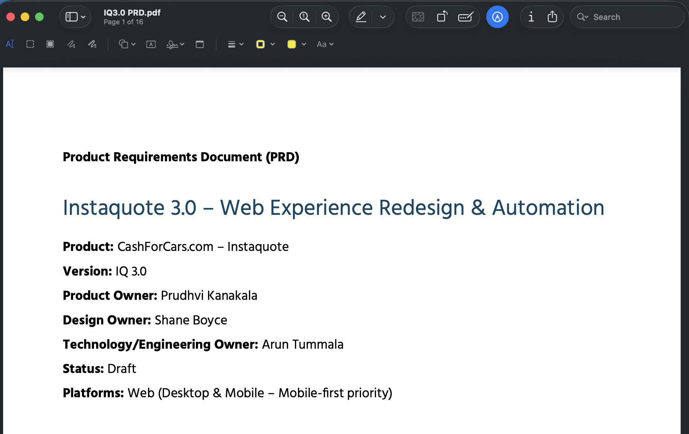
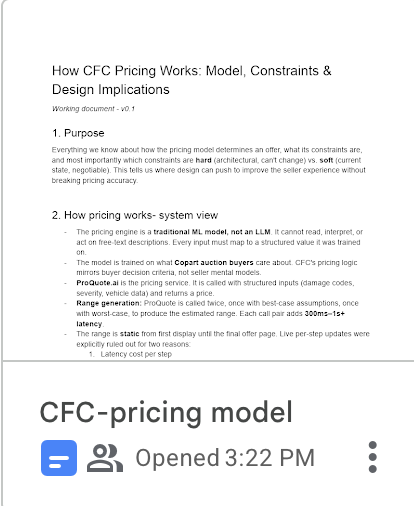
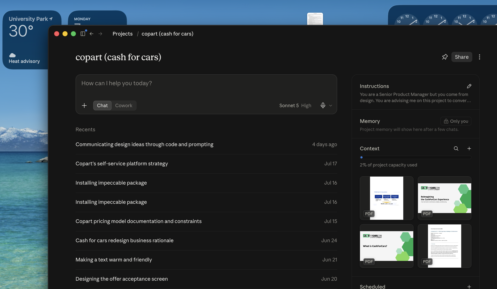
I collaborated with the product manager and data analyst over multiple meetings to get data on the model and used Claude as a partner to break it down into digestible terms for myself and my team.
The more specific/granular the data, the less accurate the price.
Not more questions but better questions.
Improving the pricing accuracy
Since updating the backend required high engineering effort, I designed solutions focusing on better inputs, working within the same limitations but still improving overall accuracy.
01
The extent of damage was the most important evaluation factor for the model, but also the one that lacked the most clarity.
Here is the after & before of the damage question:
New damage question
Old damage question
This let the users have more control over their inputs and provided the model with enough data to accurately evaluate all kinds of vehicles, while requiring only minimal tech effort.
But it wasn't easy getting here...
Exploration 1 - providing visual cues for extent of damage
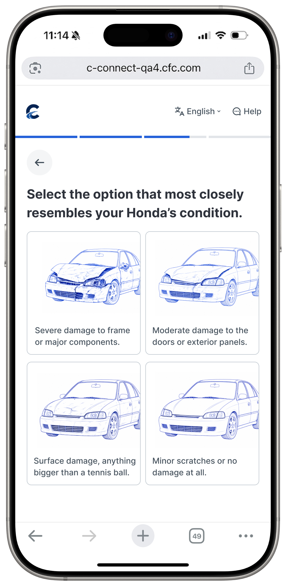
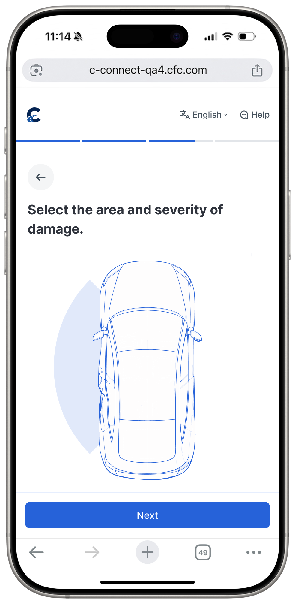
Too visually cluttered and not enough clarity on what each severity means. Such intense images might scare users into lying about their condition.
Exploration 2 - More specific, accurately point area of damage then select severity for each area
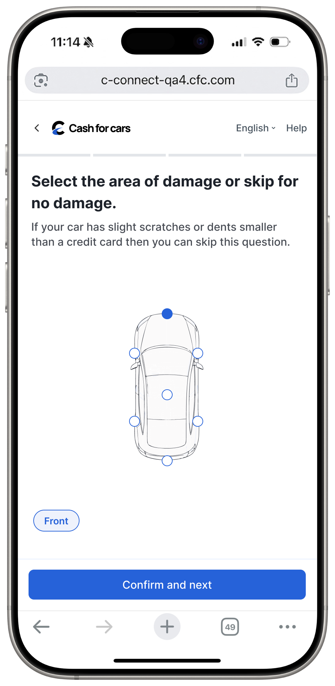
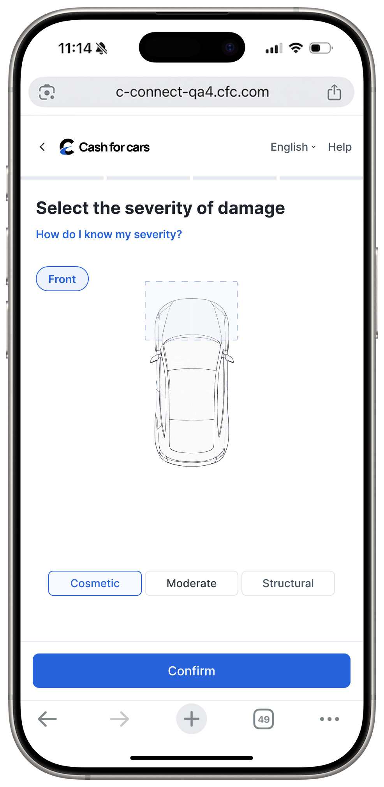
This gave users the highest level of control, allowing them to select different levels of severity for each area. It also gave the model more specific data, increasing the accuracy.
However, the model can only account for the primary/highest severity of damage, so this would mean more steps for no real value.
Solution - Select type of severity first and then area only for that kind of damage
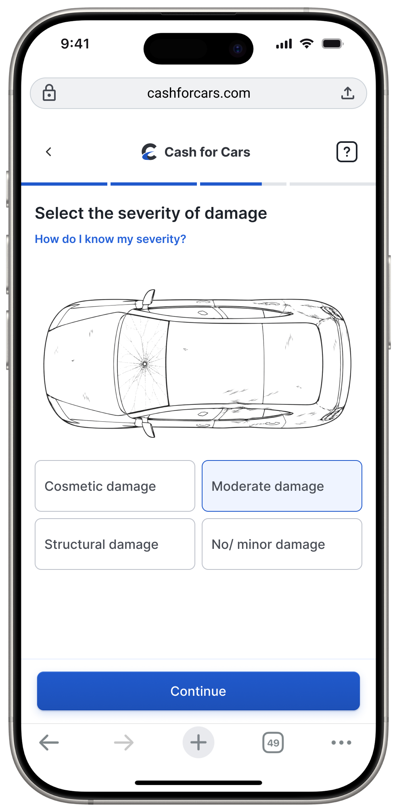
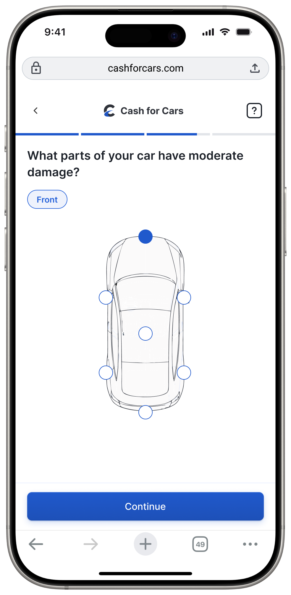
This solution balanced user effort & satisfaction with the model's limitations. Using "cosmetic, moderate, or structural" as UX copy is more informative than "minor, moderate, or severe."
02
Introducing image upload as an alternative to the damage question
While adding the extent of damage definitely improved the accuracy, I knew there was room to push for a little more.
Image analysis had the highest accuracy for evaluating vehicle condition, and it was already being done in the journey, just at the end, for verification purposes. So I proposed adding it as an alternative to manually inputting the damage condition.
Before
After
No
Yes
Copart had not explored this yet because they were afraid of drop-offs; however, they did not think about adding it as an optional route instead of a mandatory step.

Final image upload prototype
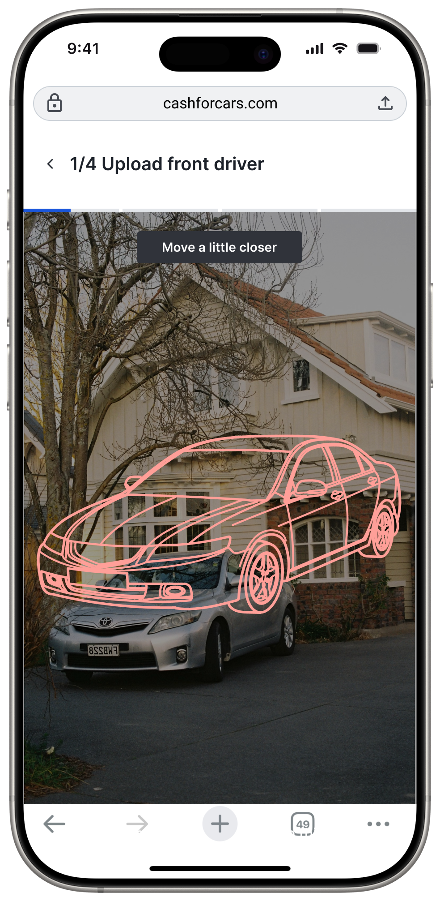
Stencil to guide users and prevent photo rejections later
Actionable instructions to prevent confusion
Red/yellow/green color change for visual feedback
Design choice — only real-time photo upload
I want to call out a design decision I made here that initially received some pushback. Having real-time upload as the only option meant a higher risk of drop-offs, since people sometimes like taking pictures of their car ahead of time and using them later.
However, with the advancement of AI, it's a lot easier to manipulate images. Plus, with the limitations of the model, certain angles/lighting would make the images unusable. Since the idea behind having image upload within the flow was to increase pricing accuracy and reduce call dependency during verification, I was able to prove to the team that the pros here outweighed the cons.
Designing for trust and transparency
Balancing transparency without overwhelming the user.
The most frustrating point in the journey was the final offer page. Users were confused about next steps, and the offer wasn't convincing enough for them to actually go through with the lead. Here's how I redesigned it:
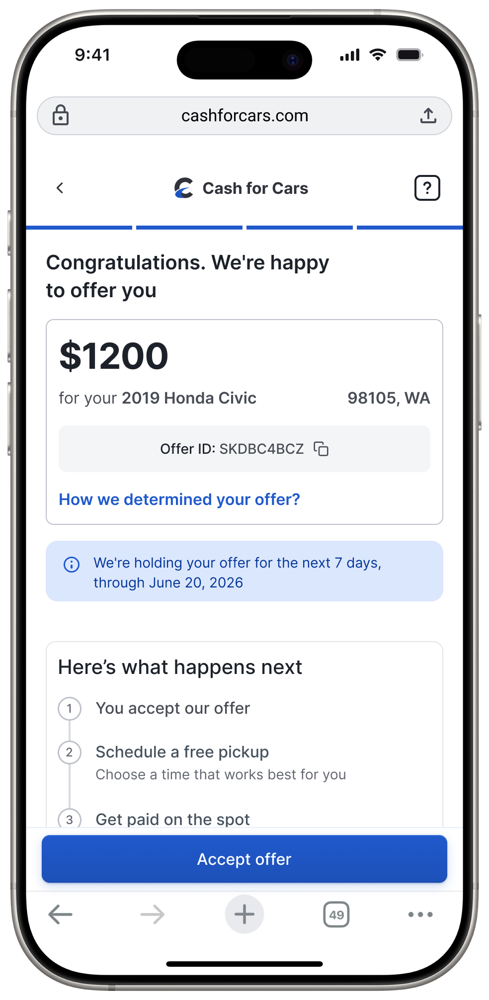
New final offer screen
Old final offer screen
Offer breakdown to build credibility and trust in the offer
Next steps to reduce uncertainty.
Communicates deadline clearly. Neutral language to foster control rather than urgency.
Offer breakdown is a new feature that I designed.
Copart received a lot of calls asking if there was room for haggling or even questioning the fairness of the offer. During my tests, one of the most common questions asked by participants was how Copart calculates the number — they lacked confidence in the offer.
Showing users how the offer is determined would not only build integrity and trust in the company but also reduce the number of calls received. Here are a few explorations I tried:
How was this estimated
Market value
$1600.00
Mileage adjustment
$300.00
Repainting cost
$50.00
Offer breakdown displayed as a card
Too much information — it would have led to more calls, so I quickly ruled this one out.
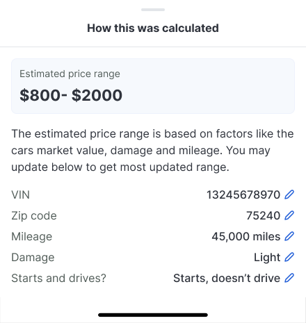
Modal with estimated price range
Could have led to gamification, with users editing their answers based on changes in the price range.
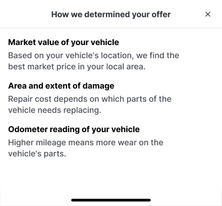
Solution
Modal displaying how the offer is calculated
Just enough explanation to justify the offer and reduce support calls.
Building blocks
Small changes I made that led to big impacts.
01
Choosing the right progress bar
02
Adding skeleton screens
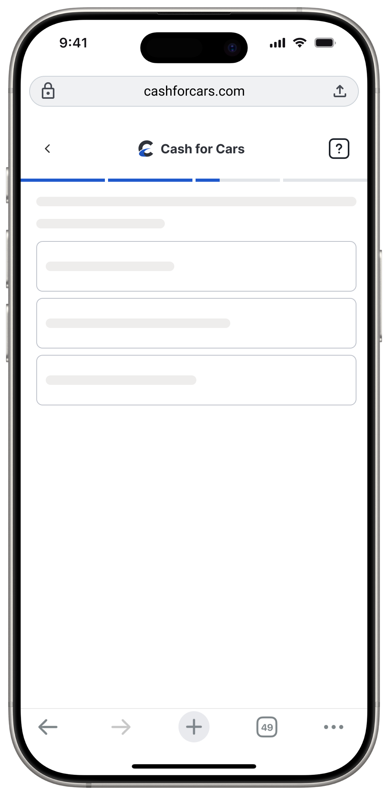
After
Before
63% of users who saw the blank loading screen dropped off, and this was also the top source for dead clicks. I designed skeleton screens so each element can load individually and also reassure the user that progress is happening in the background.
03
Removing CTAs
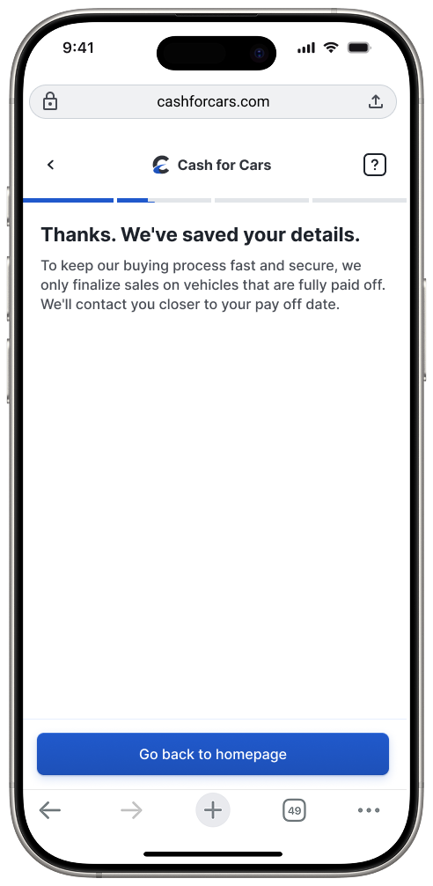
After
Before
Because Copart didn't accept cars with existing loans, having two 'Request Call' CTAs on the exit screen created unnecessary operational costs and user friction. I replaced them with a direct 'Return to Homepage' CTA to streamline the exit path.
Impact
Our work was highly praised by the Copart leadership and product teams, and most of our designs are currently under A/B testing.
Here is a snapshot from our final presentation with the entire Copart design team:
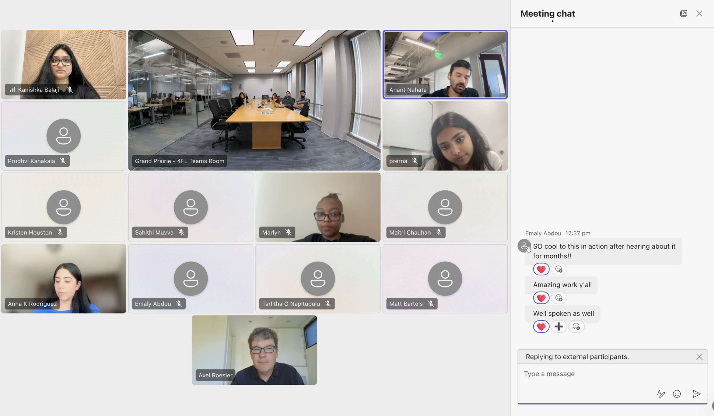
Other measurable wins
Eliminated dead-end 'Request Call' CTAs for ineligible vehicles, reducing unnecessary operational costs and call center volume.
Resolved dead clicks on loading screens and reduced rage clicks by 6% by redesigning title verification and mileage input fields.
Improved pricing model accuracy by 47% through the introduction of image upload.
Reflection
My key takeaways.
Data comes in handy at crossroads
It's inevitable to have varying opinions during a project, but if you have data to back up your argument, it becomes easier to find alignment and keep the project moving.
Design won't always be perfect and that's okay
Technology always has constraints; my role is to bridge that gap by designing in a way that users never feel the limitations of our underlying tech.